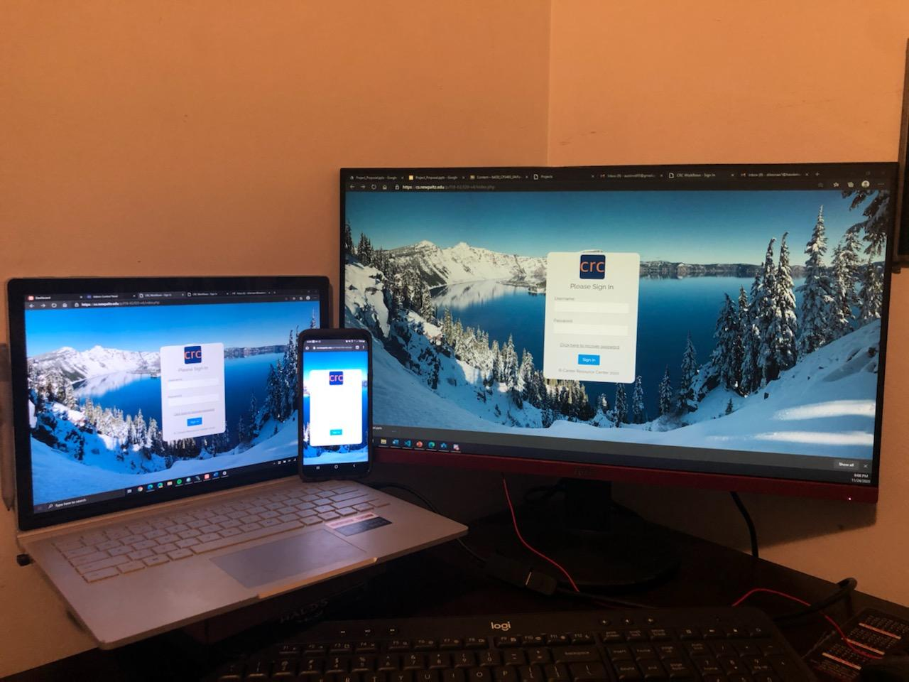
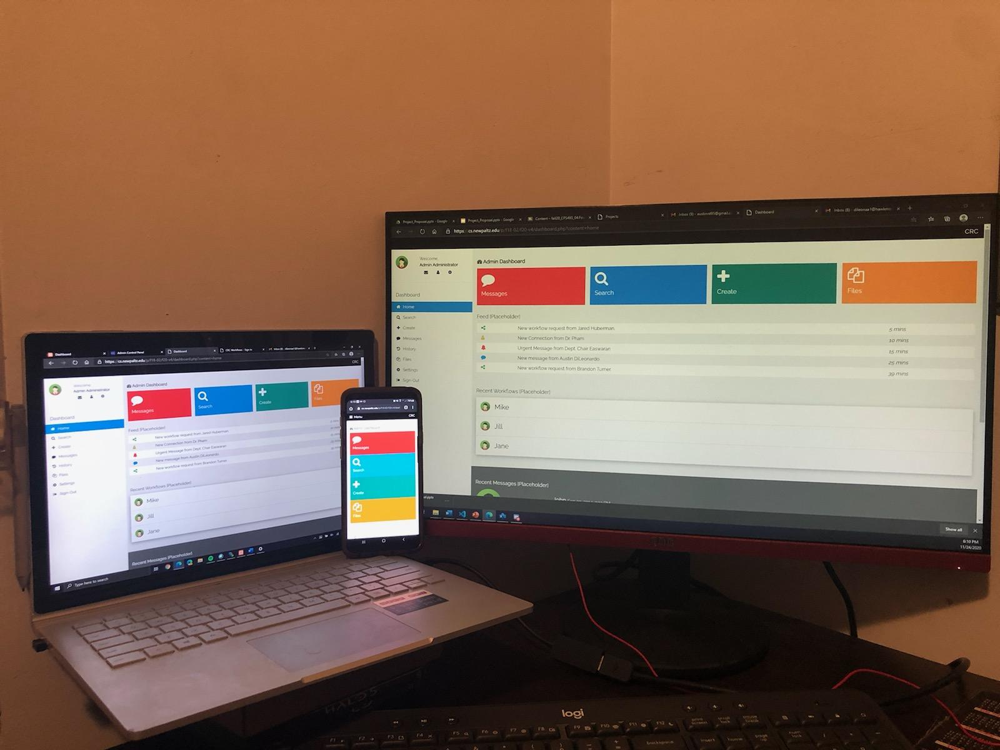

NOTE: This application is hosted by the academic departments at SUNY New Paltz, and may no longer be available for demonstration.
NOTE: This application was incomplete as of December 2020, pending completion of critical workflow creation functionality. The following is a demonstation and explation of the features I worked on during my time on the project.
 This project was requested by the Career Resource Center (CRC) at SUNY New Paltz. It seeks to simplify the process of finding staff and students on campus to complete necessary paperwork for things like internships that require as many as 8 participants by moving the creation and submission of this paperwork to a responsive web-application.
Minimal external libraries and frameworks were used per client's request. The technologies used were HTML5, CSS, JavaScript, PHP, MySQL relational-database, and W3.CSS. The features of this version are as follows: